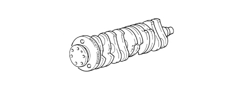

INTRODUCTION - CRANKSHAFT AND FLYWHEEL
- Path
- Descriptions > 10 ENGINE > 1024 CRANKSHAFT AND FLYWHEEL > 1024B ENGINE FLYWHEEL > INTRODUCTION - CRANKSHAFT AND FLYWHEEL
- Kind
- system description
- Applies to
- engines: 2.4 JTD 20v; all production periods
- Interactive page
- https://sloeber94.github.io/elrnDB-fCrm/en/#/194003887
Applies to: engines: 2.4 JTD 20v; all production periods
CRANKSHAFT
This is steel and rests on six main bearings. Shaft axial clearance is governed by two half-rings housed in the rear main bearing.
Ten counterweights balance the crankshaft rotary masses with precision.
A set of channels runs along the length of the crankshaft to lubricate the main journals and crankpins.
A phonic wheel is fitted at the rear for the rpm sensor.

ENGINE FLYWHEEL
Made from cast iron with a ring gear in tempered steel, it is suitably balanced.